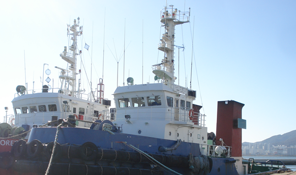

3,480 BHP 362 GRT Towing Tug Blt 1996 Kr
/ informed by BLUE MARINE CO., LTD.
(18-31)

- TYPE : TOWING TUG BOAT
- BUILT : 19.01.1996 KANG NAM CORP. KOREA
- FLAG/CLASS : KOREA / KR, +KRS1 | TUG BOAT | +KRM1
- RADIO INSTALLATION : GMDSS A1+A2+A3
- LOA/L/B/D : 37.85 / 34.42 / 8.80 / 3.80m
- DWT/draft : 162 DWT / 3.590m
- GRT/NRT : 362 GRT (LOCAL 230T) / 108 NRT
- MAIN ENGINE : HYUNDAI B&W MAN ALPHA 8L23/301 1,740ps X 900rpm X 2set
(TTL. 3,480 BHP)
- AUX ENGINE : CUMMINS 6BT 1800rpm X 95kw X 118.75kva X 2set,
CUMMINS 4BT 1800rpm X 35kw X 43.75kva X 1set
- SPEED : 13.30 kt
- PROPELLER : FIXED PICH PROPELLER / KORT NOZZLE
- TANK CAPA. : FO 121.0 FW 54.6 m³
- TOWING WINCH :HYDRAULIC 5.0TON/20M/MIN
- TOWING HOOK : SWL 60.0TON
- NEXT SS/DD : 2017 05.21 / 2018 05 20
Information History
- 180718 : She is available for sale.
- 180112 : She is available for sale.